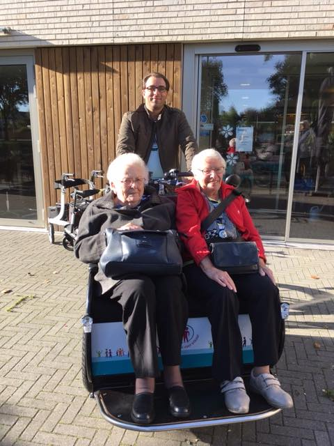

Mijn foto's
week 33 / 14 aug

week 30 / 24 juli

week 28 / 10 juli

week 27 / 3 juli

week 26 / 26 juni

week 24 / 12 juni

week 22 / 29 mei

week 21 / 22 mei

week 20 / 15 mei

week 19 / 8 mei

week 18 / 1 mei

week 17 / 24 april

week 16 / 17 april

week 15 / 10 april

week 14 / 3 april

week 12 / 20 maart

week 11 / 13 maart

week 10 / 6 maart

week 9 / 27 februari


w.48/28 nov 2018

w.47/21 nov 2018

